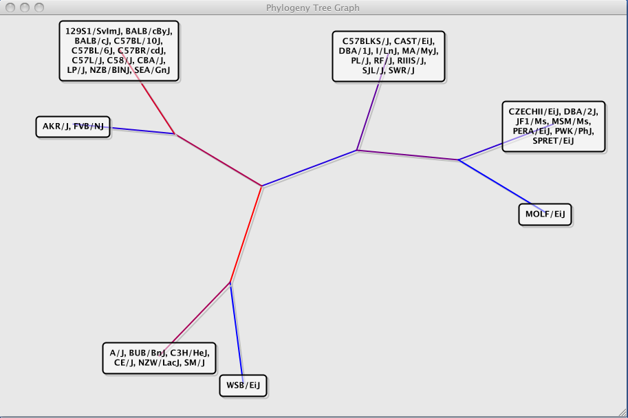
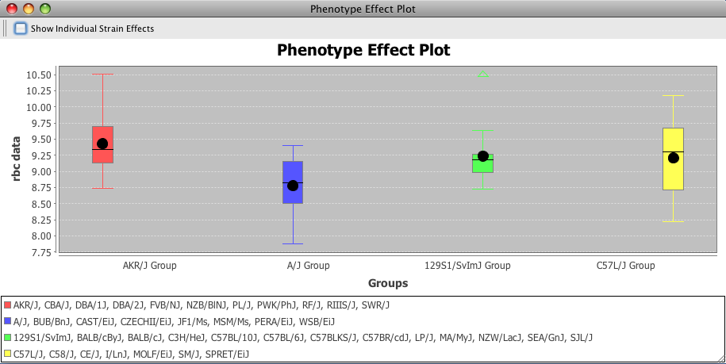
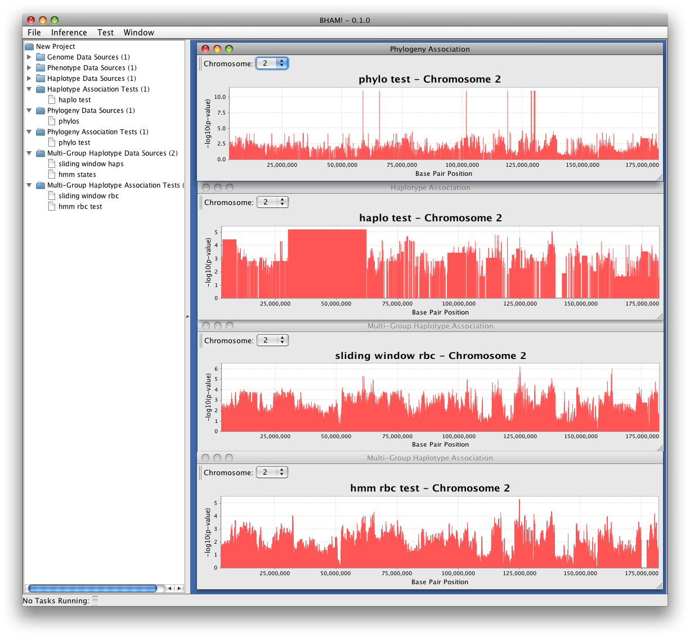

Click here to deploy BHAM! - 0.3.0 alpha release
Click here for the zipped up
distribution of BHAM!
Sample Data: Please contact Gary Churchill before
sharing genotype or HMM data with anyone outside of the Jackson Laboratory
Requirements:
-
Java Runtime >= 5.0
-
At least 2Gb of RAM
Release Notes:
BHAM 0.3.0 alpha release
-
Resolved issue 713:
added ability to save/load projects
-
Resolved issue 712:
added ability to plot multiple chromosomes on the same axis
-
Resolved issue 711:
fixed a problem with export files not being closed properly
-
Resolved issue 714:
added logic to compress contiguous intervals into a single interval if the
haplotype groupings match exactly. This should improve the space and time
performance of BHAM
BHAM 0.2.1 alpha release (SVN Revision# 6059):
- Small document modifications
- fixed JNLP deployment
- added HMM data to download list
BHAM 0.2.0 alpha release:
To run the command line version just type "java -Xmx1g -jar bham-0.2.0.jar".
This will run with a 1Gb memory limit on the application. If you run out of
memory, you could bump this up using something like -Xmx1500m which would
allocate 1500 Mb to the application.
This version adds:
- "Standard" Haplotype Testing:
1) Download genotype data formatted like
http://cgd.jax.org/datasets/popgen/imputed.shtml
2) Convert genotype data to binary format using BHAM!
3) Load CSV phenotype data formatted like MPD individual data
4) Infer haplotypes using "Infer Haplotype Block Structure"
5) Test haplotypes using "Haplotype Association Test"
6) Right click on test tree node to plot
7) Export data using "Export Haplotype Association Test Results"
- HMM haplotype testing
1) Load HMM states using the CSV import
2) Load CSV phenotype data formatted like MPD individual data
3) Test using "Multi-Group Haplotype Association Test"
4) Right click on test tree not to plot
5) Export using "Export Multi-Group Haplotype Association Test"
- Sliding window haplotype testing
1) Download genotype data formatted like
http://cgd.jax.org/datasets/popgen/imputed.shtml
2) Convert genotype data to binary format using BHAM!
3) Load CSV phenotype data formatted like MPD individual data
4) Infer haplotypes using "Sliding Window Mult-Group Haplotype Inference"
5) Test using "Multi-Group Haplotype Association Test"
6) Right click on test tree node to plot
7) Export using "Export Multi-Group Haplotype Association Test"
- Max-K Phylogeny testing
1) Download genotype data formatted like
http://cgd.jax.org/datasets/popgen/imputed.shtml
2) Convert genotype data to binary format using BHAM!
3) Load CSV phenotype data formatted like MPD individual data
4) Infer phylogenies using "Infer Perfect Phylogeny Trees"
5) Test using "Phylogeny Association Test"
6) Right click on test tree node to plot
7) Export using "Export Phylogeny Association Test"
Note that there are "help" buttons, but the help functionality has not yet
been implemented.
BHAM 0.1.0 alpha release:
Requirements:
- Java Runtime >= 5.0
- At least 2Gb of RAM
To run the command line version just type "java -Xmx1g -jar bham-0.1.0.jar".
This will run with a 1Gb memory limit on the application. If you run out of
memory, you could bump this up using something like -Xmx1500m which would
allocate 1500 Mb to the application.
The feature set is VERY limited in this initial version. All that you can do for now is:
- Convert comma-separated genotype data formatted like the files at
http://cgd.jax.org/datasets/popgen/imputed.shtml into the binary format
that BHAM! understands. This is a required 1st step before you can do
anything else
- Infer and export perfect phylogenies
- Use the Inference -> Infer Perfect Phylogeny Trees dialog
- Next to export use File -> Export Phylogeny Data
- Infer and export haplotype blocks
- Use the Inference -> Infer Haplotype Block Structure dialog
- Next to export use File -> Export Haplotype Blocks
Note that there are "help" buttons, but the help functionality has not yet
been implemented.
Here are some screen shots:
Phylogenies (edges colored by significance):

Effect Plots:

Scans (Four Methods):
